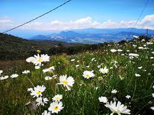
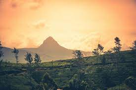
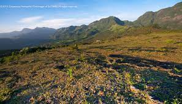

|

|
Piduruthalagala Mountain
- It is situated in Nuwara Eliya
- It is the higest mountain in Sri Lanka.
|
|

|
Siripada Mountain
- It has become famous because it contains the footprints of Loard Buddah.
- It is located in Rathnapura.
|
|

|
Knukels Mountain
- It is situated in central of Sri Lanka.
- It is a consists of five mountain peaks and several other smaller peaks.
|